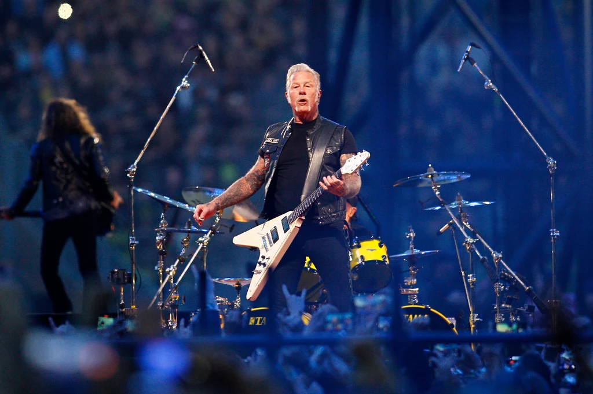
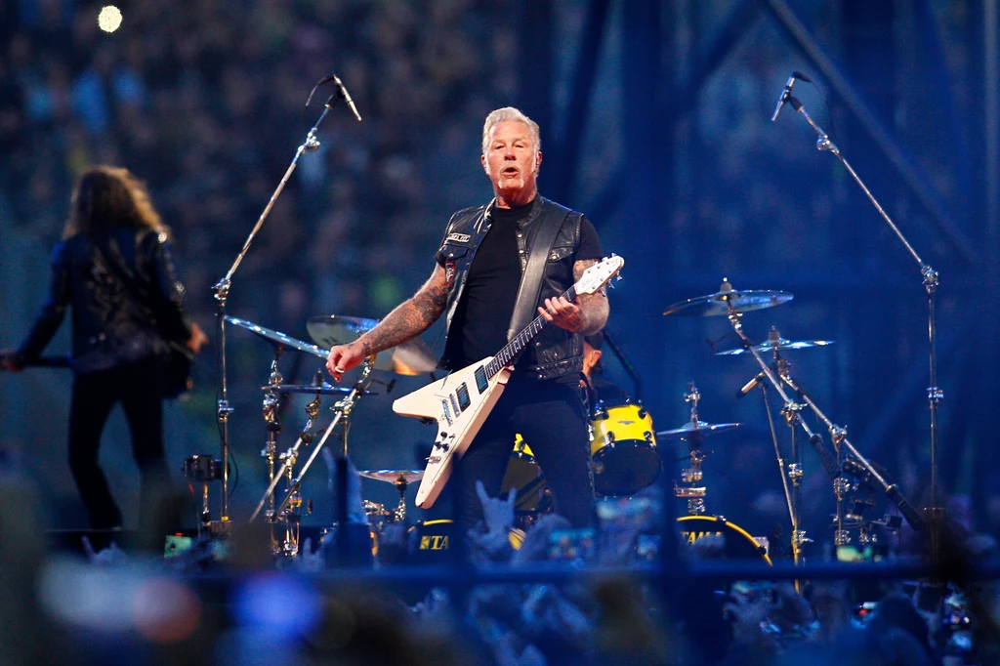

Power metal
A power metal egy dallamos és epikus metál alműfaj, amely himnikus refrénekkel és fantasy témákkal dolgozik. Előadók: Sabaton, PowerWolf.
 

A metál egy energikus és erőteljes zenei műfaj, amely a rockzenéből fejlődött ki az 1960-as évek végén. Számos alműfaja létezik, melyek különböző hangulatokat és témákat közvetítenek.
A power metal egy dallamos és epikus metál alműfaj, amely himnikus refrénekkel és fantasy témákkal dolgozik. Előadók: Sabaton, PowerWolf.
Blues-alapú, energikus hangzású stílus, amely közel áll a metalhoz. Előadók: AC/DC, Guns N’ Roses.
A klasszikus metalstílus, súlyos riffekkel és torzított gitárokkal. Előadók: Iron Maiden, Black Sabbath.
A klasszikus zene és a metal egyesítése. Jellemző az operás ének, zenekari hangszerelés. Előadók: Nightwish, Within Temptation.
Mechanikus hangzásokkal dolgozik, gyakran sötét, társadalomkritikus témákkal. Előadó: Rammstein.
Mélabús, sötét atmoszféra, gyakran depresszió és misztikum témáival. Előadók: Paradise Lost, Katatonia.
A hardcore punk és metal keveréke, tiszta ének és hörgés váltakozása jellemzi. Előadók: Sleep Token, Motionless in White.
Death metal + metalcore keverék, erőteljes breakdown-okkal és gutturális vokállal. Előadók: Polaris, Suicide Silence.
Rap, funk és alternatív rock elemekkel vegyített metal. Előadók: Linkin Park, Slipknot.
Gyors, agresszív ritmusok, társadalmi kritikával. Előadók: Metallica, Slayer.
Az extrém metal egyik legkeményebb változata, brutális tempóval és hörgéssel. Előadók: Arch Enemy, Dying Fetus.